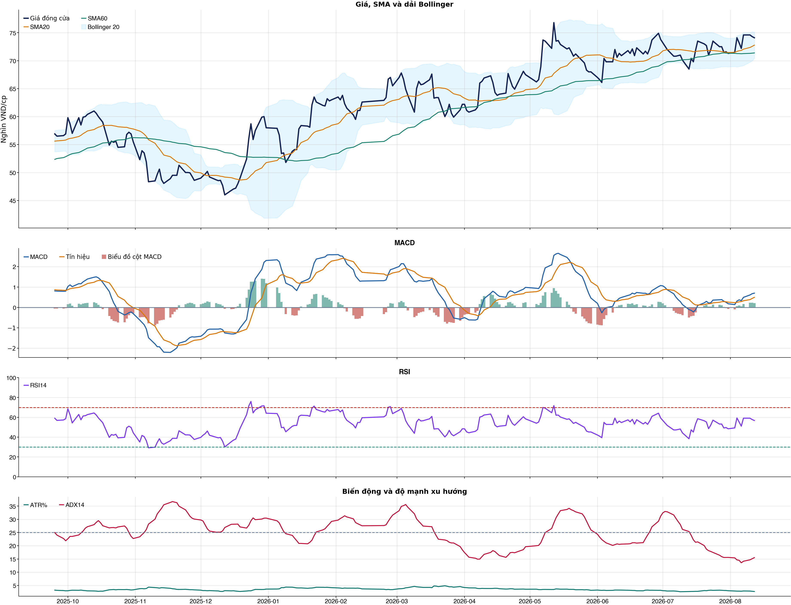
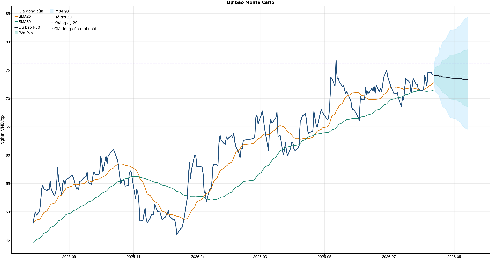
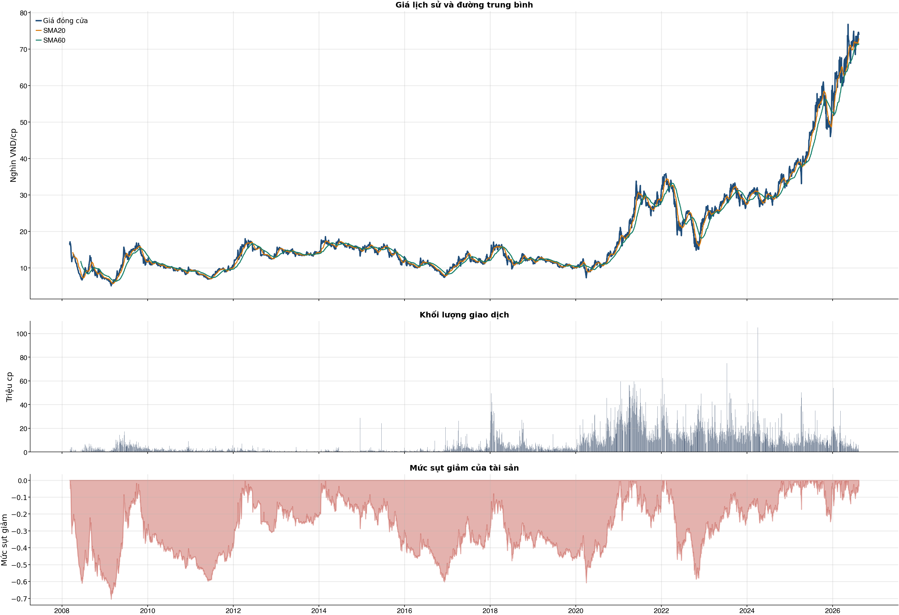

Kết quả chính
KPI đọc nhanh trước, chi tiết bấm mở bên dướiChi phí & vòng lệnh
Trọng tâm: tránh giao dịch nhiều làm phí ăn hết lợi thếKhuyến nghị hành động sau phíWAIT
| Model health | WEAK | Có ngưỡng sau phí dương trong sensitivity, nhưng model health chưa sạch: Kiểm thử chiến lược có lợi thế ròng, AUC của mô hình, Độ chính xác cân bằng của mô hình, XGBoost vượt mô hình Logistic đối chứng. |
| Nếu chưa có cổ phiếu | WAIT | Chờ điểm mua tốt hơn |
| Lý do cho mua mới | Ngưỡng sau phí đang tốt hơn là 0.58, nhưng xác suất hiện tại chỉ 50.0%. | |
| Nếu đang nắm giữ | HOLD_DISCIPLINED | Chưa đủ điều kiện mua mới, nhưng kỹ thuật chưa xấu; nếu đang giữ thì có thể giữ có stop-loss, không mua thêm. |
| Xác suất hiện tại | 50.0% | So với ngưỡng sau phí được chọn từ OOS. |
| Ngưỡng sau phí chọn | 0.58 | Ngưỡng 0.58; net +7.7%; 14 vòng. |
| Baseline cấu hình | 38 vòng | Net sau phí -13.4%. |
| Reward/Risk | 2.92 | Chỉ dùng nếu decision cuối cùng cho phép mở vị thế. |
| Kỹ thuật / tin | 4 điểm | Hồi phục / nghiêng tăng; news warning: không; sentiment 0.00. |
Đây là lớp ra quyết định sau phí: tách riêng người chưa có cổ phiếu và người đang nắm giữ. Mua mới chỉ được xét khi model health đủ tốt, xác suất hiện tại vượt ngưỡng đã sống sót qua backtest OOS sau chi phí và các guard chính không bị phá.
Bảng chính: turnover, gross, phí và net61 / 38 / 31 / 20 / 10 / 5 / 1
| Kịch bản | Cách chọn | Vòng | Gross trước phí | Phí | Net sau phí | Sharpe | Ghi chú |
|---|---|---|---|---|---|---|---|
| Gốc | Ngưỡng gốc ≥ 0.55 | 38 | +4.2% | 18.5% | -13.4% | -0.48 | Baseline 61 vòng nếu model phát tín hiệu nhiều. |
| Ngưỡng 0.58 | Chỉ vào lệnh khi xác suất ≥ 0.58 | 14 | +15.3% | 6.9% | +7.7% | 0.45 | Tăng ngưỡng để giảm vòng lệnh. |
| Ngưỡng 0.60 | Chỉ vào lệnh khi xác suất ≥ 0.60 | 7 | +0.7% | 3.4% | -2.7% | -0.32 | Tăng ngưỡng để giảm vòng lệnh. |
| Ngưỡng 0.62 | Chỉ vào lệnh khi xác suất ≥ 0.62 | 2 | -1.6% | 1.0% | -2.6% | -0.78 | Tăng ngưỡng để giảm vòng lệnh. |
| Giới hạn 10 vòng | Tối đa 10 vòng, ưu tiên xác suất cao hơn | 10 | +10.8% | 4.9% | +5.5% | 0.34 | Ngưỡng xác suất trong nhóm: 58.5%. |
| Giới hạn 5 vòng | Tối đa 5 vòng, ưu tiên xác suất cao hơn | 5 | -2.4% | 2.4% | -4.8% | -0.71 | Ngưỡng xác suất trong nhóm: 60.7%. |
| Giới hạn 1 vòng | Tối đa 1 vòng, ưu tiên xác suất cao hơn | 1 | -1.3% | 0.5% | -1.8% | -0.58 | Ngưỡng xác suất trong nhóm: 69.2%. |
Đọc bảng này từ trái sang phải: số vòng càng ít thì phí càng thấp, nhưng kết quả sau phí vẫn chỉ là kiểm thử OOS. Các dòng 10/5/1 giới hạn số vòng bằng xác suất model cao hơn, không phải chọn lệnh thắng sau khi biết kết quả và không tự biến NO_EDGE thành BUY.
Breakdown trước phí / sau phívì sao gross dương nhưng net âm
| Kịch bản trước chi phí | +4.2% | Gross PnL 4,214,366 VND; chưa trừ commission/slippage/tax. |
| Chi phí giao dịch | -18.5% | 38 vòng; entry 20.0 bps + exit 30.0 bps = 50.0 bps/vòng; tổng phí 17,977,860 VND. |
| Kịch bản sau chi phí | -13.4% | Net PnL -13,432,860 VND; gross - cost gap khoảng +17.6%. |
| Ngưỡng phí hòa vốn | 11.4 bps/vòng | Phí hiện tại 50.0 bps/vòng; cao hơn ngưỡng này thì gross dương vẫn có thể thành net âm. |
| Kết luận hành động | CHƯA CÓ LỢI THẾ (NO_EDGE) | Không mở vị thế mới; nếu đang giữ thì xem khung HOLD/REDUCE/SELL riêng theo model health, kỹ thuật, tin và stop-loss. |
| Cách cải thiện cần test | Giảm turnover | Hiện có 38 phiên active/38 vòng; nên test threshold 0.58/0.60/0.62 hoặc giữ nhiều phiên hơn. |
Kiểm thử chiến lược ngoài mẫu sau chi phí38 vòng
| Lợi nhuận ròng | -13.4% | 739 quan sát ngoài mẫu |
| Sharpe | -0.48 | Sau chi phí |
| Mức sụt giảm tối đa | -19.5% | 38 vòng giao dịch |
| Chi phí giả định | 50.0 bps | Một vòng mua và bán |
So sánh mô hìnhXGBoost vs Logistic
| XGBoost | 0.504 | AUC 0.504 |
| Logistic | 0.514 | AUC 0.511 |
| Đa số | 0.500 | Mốc so sánh |
Mức độ quan trọng của đặc trưngtop feature
| market_return_1d | 13.54 | Mức đóng góp |
| return_5d | 11.91 | Mức đóng góp |
| beta_60d | 11.88 | Mức đóng góp |
| range_pct | 11.51 | Mức đóng góp |
| return_1d | 11.23 | Mức đóng góp |
| bb_position_20 | 11.11 | Mức đóng góp |
| return_2d | 10.71 | Mức đóng góp |
| volatility_20d | 10.60 | Mức đóng góp |
Điều kiện phát hành tín hiệuCHƯA CÓ LỢI THẾ (NO_EDGE)
| AUC của mô hình | KHÔNG ĐẠT | Điều kiện phát hành tín hiệu |
| Độ chính xác cân bằng của mô hình | KHÔNG ĐẠT | Điều kiện phát hành tín hiệu |
| XGBoost vượt mô hình Logistic đối chứng | KHÔNG ĐẠT | Điều kiện phát hành tín hiệu |
| Xác suất tăng đạt ngưỡng | KHÔNG ĐẠT | Điều kiện phát hành tín hiệu |
| Bối cảnh kỹ thuật đạt ngưỡng | ĐẠT | Điều kiện phát hành tín hiệu |
| Tỷ lệ lợi nhuận/rủi ro đạt ngưỡng | ĐẠT | Điều kiện phát hành tín hiệu |
| Dữ liệu còn mới | ĐẠT | Điều kiện phát hành tín hiệu |
| Có khối lượng vị thế hợp lệ | ĐẠT | Điều kiện phát hành tín hiệu |
| Có kết quả kiểm thử chiến lược ngoài mẫu | ĐẠT | Điều kiện phát hành tín hiệu |
| Mẫu kiểm thử chiến lược đủ lớn | ĐẠT | Điều kiện phát hành tín hiệu |
| Kiểm thử chiến lược có lợi thế ròng | KHÔNG ĐẠT | Điều kiện phát hành tín hiệu |
Quản trị rủi rostop / target
| Rủi ro/lệnh | 1.0% | 1,000,000 VND |
| Mức dừng lỗ | 71.09 | Rủi ro mỗi cổ phiếu 3.37 |
| Mục tiêu 1 | 84.34 | Lợi nhuận/rủi ro 2.92 |
| Mục tiêu 2 | 84.34 | Dự báo/kháng cự |
Kỹ thuật
Biểu đồ mở sẵn, bảng tín hiệu thu gọnBiểu đồ kỹ thuật

Tín hiệu kỹ thuậtchi tiết
| Xu hướng | Tích cực | Giá nằm trên SMA20 và SMA60. |
| MACD | Tích cực | MACD trên signal, histogram dương. |
| RSI14 | Tích cực | RSI 56.8. |
| Bollinger | Ổn định | Giá nằm trong dải Bollinger. |
| ADX | Đi ngang | ADX 15.5. |
| Thanh khoản | Thấp | 0.39 lần trung bình. |
| Stochastic | Yếu lại | %K nằm dưới %D. |
Cơ bản & tin tức
Các bảng dài để trong nút bungPhân tích cơ bảnBCTC/tỷ số
| P/E | 45.48 | 2026-Q2 |
| P/B | 2.23 | 2026-Q2 |
| P/S | 4.12 | 2026-Q2 |
| ROE | 5.0% | 2026-Q2 |
| ROA | 0.4% | 2026-Q2 |
| Gross margin | 64.2% | 2026-Q2 |
| Net margin | 9.1% | 2026-Q2 |
| Debt/Equity | 13.20 | 2026-Q2 |
| Current ratio | 0.00 | 2026-Q2 |
| NPL | 7.5% | 2026-Q2 |
| CASA | 16.8% | 2026-Q2 |
| Dividend yield | 0.0% | 2026-Q2 |
| Market cap | 140,071.5 tỷ | 2026-Q2 |
| Revenue Growth | 28.1% | 2026-Q2 YoY |
| Profit Growth | -53.5% | 2026-Q2 YoY |
| CAPEX | -94.0 tỷ | 2026-Q2 |
| Lợi nhuận sau thuế | 1,346.7 tỷ | 2026-Q2 |
| Tổng tài sản | 892,048.6 tỷ | 2026-Q2 |
| Vốn chủ sở hữu | 62,807.2 tỷ | 2026-Q2 |
Tin tức doanh nghiệpresearch only
| Trạng thái | Có dữ liệu | research_only |
| Nguồn / số bài | VCI | 50 |
| Bài đủ timestamp | 50 | Chỉ các bài này mới được phép dùng point-in-time |
| Sentiment 5 ngày | 0.00 | 1.0 bài trước cutoff |
| Phương pháp | keyword_heuristic_v1 | Research only; chưa dùng làm tín hiệu mua/bán |
Dự báo
Kịch bản giá và lịch sử drawdownDự báo ngắn hạn20 phiên
| 2026-08-13 | 73.99 | P10 72.25 / P90 76.13 |
| 2026-08-14 | 73.98 | P10 71.14 / P90 77.16 |
| 2026-08-17 | 74.07 | P10 70.73 / P90 77.60 |
| 2026-08-18 | 73.93 | P10 70.23 / P90 78.99 |
| 2026-08-19 | 73.95 | P10 69.66 / P90 78.79 |
| 2026-08-20 | 73.82 | P10 69.00 / P90 79.47 |
| 2026-08-21 | 73.77 | P10 68.52 / P90 80.00 |
| 2026-08-24 | 73.77 | P10 68.16 / P90 80.40 |
Lịch giao dịch Việt Nam dùng cho forecastkhông tính T7/CN/lễ
VN stock calendar: loại Thứ Bảy/Chủ Nhật và các ngày nghỉ 2026 đã công bố; ngày làm bù Thứ Bảy không được tính là phiên giao dịch chứng khoán.
Ngày nghỉ đã loại: 2026-01-01, 2026-01-02, 2026-02-16, 2026-02-17, 2026-02-18, 2026-02-19, 2026-02-20, 2026-04-27, 2026-04-30, 2026-05-01, 2026-08-31, 2026-09-01, 2026-09-02
Nếu HOSE/HNX/UPCoM công bố nghỉ đột xuất, cần thêm ngày đó vào config `market_holidays` rồi chạy lại report.
Biểu đồ dự báo

Lịch sử giá và mức sụt giảm

Báo cáo dùng để học tập và lập kịch bản, không phải khuyến nghị mua/bán.
Phân tích AI có kiểm chứngbấm mở
Trạng thái quyết định: NO_EDGE
Tóm tắt: ML decision hiện giữ nguyên NO_EDGE. News Reader đã trích đoạn có nguồn của 1 bài để phân loại chủ đề (ket_qua_kinh_doanh: 1, nganh: 1, rui_ro: 1), nhưng các trích đoạn này không tạo bằng chứng mới cho quyết định đầu tư.
Kỹ thuật: Artifact kỹ thuật: bias Hồi phục / nghiêng tăng; điểm 4. Chi tiết artifact: Xu hướng: Tích cực (Giá nằm trên SMA20 và SMA60.); MACD: Tích cực (MACD trên signal, histogram dương.); RSI14: Tích cực (RSI 56.8.); Bollinger: Ổn định (Giá nằm trong dải Bollinger.); ADX: Đi ngang (ADX 15.5.); Thanh khoản: Thấp (0.39 lần trung bình.); Stochastic: Yếu lại (%K nằm dưới %D.)
Cơ bản: Artifact cơ bản: NH Sài Gòn Tài Lộc (SACOMBANK); kỳ 2026-Q2; P/E 45.48; P/B 2.23; ROE 5.0%; ROA 0.4%; Debt/Equity 13.20; Revenue Growth 28.1%; Profit Growth -53.5%.
Tin tức: Đã đọc trích đoạn giới hạn của 1 bài; phân nhóm rule-based: ket_qua_kinh_doanh: 1, nganh: 1, rui_ro: 1. Tác động cần kiểm chứng: Đối chiếu doanh thu/lợi nhuận trong bài với BCTC và kỳ vọng thị trường. So sánh tín hiệu ngành với thị phần, nhu cầu và đối thủ trước khi suy luận cho riêng doanh nghiệp. Xác minh công bố chính thức, phạm vi ảnh hưởng và khả năng định lượng rủi ro. Đây không phải sentiment hay dự báo tác động giá.
Live research: Live snapshot lấy lúc 2026-08-12T17:23:13.056235+00:00; News Reader đọc được 1 bài. ML có 5 lý do guard và vẫn là NO_EDGE. Không dùng tin live để train/backtest.
Rủi ro cần kiểm chứng
- ML guard: AUC 0.504 < 0.540
- ML guard: Balanced accuracy 0.504 < 0.520
- ML guard: XGBoost chưa vượt logistic baseline: AUC XGBoost=0.5035330612004303, AUC logistic=0.5105512901752163
- ML guard: Probability 50.0% < 55.0%
- ML guard: Lợi thế OOS ròng không đạt: return=-0.13432860000000035, Sharpe=-0.48071319287150394
- News Reader: Đối chiếu doanh thu/lợi nhuận trong bài với BCTC và kỳ vọng thị trường.
- News Reader: So sánh tín hiệu ngành với thị phần, nhu cầu và đối thủ trước khi suy luận cho riêng doanh nghiệp.
- News Reader: Xác minh công bố chính thức, phạm vi ảnh hưởng và khả năng định lượng rủi ro.
- Chỉ lưu trích đoạn giới hạn để kiểm chứng nguồn; không lưu hay hiển thị toàn văn bài báo.
- Phân nhóm là keyword rule-based để định tuyến research, không phải sentiment hay dự báo tác động giá.
- Dữ liệu News Reader chỉ phục vụ research/report; không dùng làm feature train/backtest khi chưa có lịch sử available_at point-in-time.
- Tin live/trích đoạn cần mở URL gốc để kiểm chứng bối cảnh, số liệu và thời điểm trước khi sử dụng.
Bằng chứng
- ML decision artifact: NO_EDGE. AUC 0.504 < 0.540
- ML decision artifact: NO_EDGE. Balanced accuracy 0.504 < 0.520
- ML decision artifact: NO_EDGE. XGBoost chưa vượt logistic baseline: AUC XGBoost=0.5035330612004303, AUC logistic=0.5105512901752163
- ML decision artifact: NO_EDGE. Probability 50.0% < 55.0%
- ML decision artifact: NO_EDGE. Lợi thế OOS ròng không đạt: return=-0.13432860000000035, Sharpe=-0.48071319287150394
- News Reader [dautucophieu.net]: Cập nhật cổ phiếu STB – Q2/2026: Chi phí dự phòng gia tăng áp lực lên lợi nhuận - dautucophieu.net | nhóm: ket_qua_kinh_doanh, nganh, rui_ro (2026-08-11T04:22:31+00:00)
Báo cáo chỉ tổng hợp artifact đã lưu để nghiên cứu; không phải khuyến nghị mua/bán. Quyết định và vị thế vẫn bị khóa theo signal_decision.json.
Tác động của tin lên model
Trạng thái: research_only · Áp vào signal chính: not_applied
Khuyến nghị hệ thống: Chỉ hiển thị như shadow/research, chưa thay signal chính.
Gate chưa đạt: min_articles_60, min_feature_rows_30, news_feature_gain_positive, auc_at_least_0_55, balanced_accuracy_at_least_0_52
News feature importance
| Feature tin | Gain |
|---|---|
| news_count_lookback | 0.000 |
| news_sentiment_mean_lookback | 0.000 |
| news_positive_count_lookback | 0.000 |
| news_negative_count_lookback | 0.000 |
| news_earnings_count_lookback | 0.000 |
| news_corporate_action_count_lookback | 0.000 |
| news_legal_count_lookback | 0.000 |
| news_source_count_lookback | 0.000 |
Điều kiện bật news vào signal chính
| Gate | Kết quả |
|---|---|
| min_articles_60 | Chưa đạt |
| min_feature_rows_30 | Chưa đạt |
| news_feature_gain_positive | Chưa đạt |
| auc_at_least_0_55 | Chưa đạt |
| balanced_accuracy_at_least_0_52 | Chưa đạt |
CSV dựng từ live snapshots chỉ phù hợp smoke test/research; cần lịch sử available_at dài hơn trước khi dùng production.
Tin web đã lấyheadline + nguồn
| Nguồn | Tiêu đề | Thời điểm | Link |
|---|---|---|---|
| dautucophieu.net | Cập nhật cổ phiếu STB – Q2/2026: Chi phí dự phòng gia tăng áp lực lên lợi nhuận - dautucophieu.net | 2026-08-11T04:22:31+00:00 | Mở nguồn |
News Reader: bài đã đọc và trích đoạnbấm mở trích đoạn
| Nguồn | Tiêu đề | Nhóm | Thời điểm | Trích đoạn đã đọc | Link |
|---|---|---|---|---|---|
| dautucophieu.net | Cập nhật cổ phiếu STB – Q2/2026: Chi phí dự phòng gia tăng áp lực lên lợi nhuận - dautucophieu.net | ket_qua_kinh_doanh, nganh, rui_ro | 2026-08-11T04:22:31+00:00 | Xem trích đoạnChứng khoán Tổng quan về TTCK CK Phái sinh Chứng quyền Tin tức Cập nhật KQKD Doanh nghiệp Thế giới Tài chính – Ngân hàng Hàng hóa Sống Phân tích CK Báo cáo của Nguyễn Văn Nguyên Phân tích cơ bản Phân tích kỹ thuật Cập nhật ngành Sự kiện: Công bố KQKD Q2/2026 vào ngày 30/7/2026 STB đã ghi nhận LNTT Q2/2026 đạt 2 nghìn tỷ đồng, giảm 44% so với cùng kỳ và giảm 4% so với quý trước, chủ yếu do thu nhập lãi thuần giảm 5% so với cùng kỳ và chi phí dự phòng tăng 459% so với cùng kỳ. LNTT 6 tháng đầu năm 2026 đạt 4,1 nghìn tỷ đồng, giảm 44% so với cùng kỳ, hoàn thành 45% dự báo cả năm của chúng tôi. Mặc dù thấp hơn một chút so với dự báo 6 tháng, chênh lệch này không lớn do dự báo cả năm 2026 của chúng tôi đã giả định chi phí dự phòng ở mức 13,5 nghìn tỷ đồng, trong đó 53% đã được trích lập trong 6 tháng đầu năm 2026. Đồ thị cổ phiếu STB phiên giao dịch ngày 11/08/2026 Tăng trưởng tín dụng phục hồi khiêm tốn nhờ phân khúc doanh nghiệp Dư nợ tín dụng của STB tăng 1,5% so với quý trước và kể từ đầu năm đạt 636 nghìn tỷ đồng tại thời điểm cuối Q2/2026, thấp hơn đáng kể so với toàn ngành (tăng hơn 8% kể từ đầu năm). Điều này phản ánh chiến lược tiếp tục tập trung xử lý các tài sản tồn đọng trong khi mở rộng hoạt động cho vay một cách có chọn lọc của Ngân hàng. Theo kỳ hạn, cho vay trung hạn (kỳ hạn từ 1-5 năm) tăng mạnh 35% so với quý trước, trong khi cho vay ngắn hạn và dài hạn giảm lần lượt 4% và 1% so với quý trước. Chúng tôi cho rằng tăng trưởng mạnh ở mảng cho vay trung hạn chủ yếu đến từ hoạt động tài trợ cho các khách hàng doanh nghiệp lớn, trong khi danh mục DNNVV và bán lẻ nhìn chung ổn định. Trên thực tế, STB đã đang triển khai một số chương trình cho vay mới, bao gồm các gói vay mua nhà cho khách hàng mua nhà tại các dự án Vinhome sau thỏa thuận hợp tác chiến lược được công bố vào tháng 4/2026, cũng như gói tài trợ 20 nghìn tỷ đồng cho các doanh nghiệp xuất khẩu và thương mại. Chúng tôi cho rằng Ngân hàng nhiều khả năng sẽ tăng cường quan hệ với Vingroup và các doanh nghiệp khác, điều này có thể trở thành động lực quan trọng cho tăng trưởng tín dụng bên cạnh phân khúc bán lẻ và DNNVV cốt lõi. Về phía huy động, tiền gửi khách hàng tăng 7,6% so với quý trước và tăng 4,8% kể từ đầu năm đạt 648 nghìn tỷ đồng, trong khi giấy tờ có giá gần như đi ngang so với quý trước và vay liên ngân hàng giảm 42% so với quý trước xuống 90 nghìn tỷ đồng. Tỷ lệ tiền gửi không kỳ | Mở nguồn |
Chi tiết báo cáo tài chínhbảng dài
Kết quả kinh doanh — 4 kỳ gần nhất
Hiển thị 35 dòng đầu; mở CSV đầy đủ.
| Khoản mục | 2026-Q2 | 2026-Q1 | 2025-Q4 | 2025-Q3 |
|---|---|---|---|---|
| Tổng lợi nhuận/lỗ trước thuế | 2,029.9 tỷ | 2,106.2 tỷ | -3,360.1 tỷ | 3,656.9 tỷ |
| Chi phí thuế TNDN hiện hành | -683.2 tỷ | -521.8 tỷ | 595.5 tỷ | -755.6 tỷ |
| Chi phí thuế TNDN hoãn lại | 0.0 tỷ | 0.0 tỷ | 12.2 tỷ | 0.0 tỷ |
| Chi phí thuế thu nhập doanh nghiệp | -683.2 tỷ | -521.8 tỷ | 607.7 tỷ | -755.6 tỷ |
| Lợi nhuận sau thuế | 1,346.7 tỷ | 1,584.4 tỷ | -2,752.5 tỷ | 2,901.3 tỷ |
| Lợi ích của cổ đông thiểu số | 0.0 tỷ | 0.0 tỷ | 0.0 tỷ | 0.0 tỷ |
| Cổ đông của Công ty mẹ | 1,346.7 tỷ | 1,584.4 tỷ | -2,752.5 tỷ | 2,901.3 tỷ |
| Lãi cơ bản trên cổ phiếu (VND) | 0.0 tỷ | 0.0 tỷ | 0.0 tỷ | 0.0 tỷ |
| Lãi trên cổ phiếu pha loãng (VND) | 0.0 tỷ | 0.0 tỷ | 0.0 tỷ | 0.0 tỷ |
| Thu nhập lãi và các khoản thu nhập tương tự | 16,479.9 tỷ | 15,151.5 tỷ | 14,027.1 tỷ | 15,946.9 tỷ |
| Chi phí lãi và các chi phí tương tự | -10,232.7 tỷ | -9,109.5 tỷ | -8,669.1 tỷ | -8,072.5 tỷ |
| Thu nhập lãi thuần | 6,247.2 tỷ | 6,042.0 tỷ | 5,358.0 tỷ | 7,874.4 tỷ |
| Thu nhập từ dịch vụ | 3,978.3 tỷ | 1,552.4 tỷ | 1,659.2 tỷ | 1,521.8 tỷ |
| Chi phí dịch vụ | -776.3 tỷ | -802.8 tỷ | -900.8 tỷ | -848.6 tỷ |
| Lãi/Lỗ thuần từ hoạt động dịch vụ | 3,202.0 tỷ | 749.6 tỷ | 758.3 tỷ | 673.2 tỷ |
| Lãi/(lỗ) thuần từ hoạt động kinh doanh ngoại hối và vàng | 350.1 tỷ | 339.4 tỷ | 294.5 tỷ | 193.5 tỷ |
| Lãi/(lỗ) thuần từ mua bán chứng khoán kinh doanh | 0.0 tỷ | 0.0 tỷ | 0.0 tỷ | 0.0 tỷ |
| Lãi/(lỗ) thuần từ mua bán chứng khoán đầu tư | -73.1 tỷ | 75.2 tỷ | -11.6 tỷ | -0.2 tỷ |
| Thu nhập khác | 263.8 tỷ | 351.5 tỷ | 1,366.7 tỷ | 119.3 tỷ |
| Chi phí khác | -39.9 tỷ | -27.9 tỷ | -78.6 tỷ | -67.5 tỷ |
| Lãi/(lỗ) thuần từ hoạt động khác | 223.8 tỷ | 323.5 tỷ | 1,288.1 tỷ | 51.7 tỷ |
| Thu nhập từ cổ tức | 0.0 tỷ | 8.3 tỷ | 7.0 tỷ | 3.8 tỷ |
| Tổng thu nhập hoạt động | 9,950.1 tỷ | 7,538.1 tỷ | 7,694.3 tỷ | 8,796.5 tỷ |
| Chi phí quản lý doanh nghiệp | -2,825.1 tỷ | -3,408.0 tỷ | -1,822.3 tỷ | -4,095.6 tỷ |
| Lợi nhuận thuần hoạt động trước khi trích lập dự phòng tổn thất tín dụng | 7,124.9 tỷ | 4,130.1 tỷ | 5,872.0 tỷ | 4,700.9 tỷ |
| Trích lập dự phòng tổn thất tín dụng | -5,095.0 tỷ | -2,023.9 tỷ | -9,232.2 tỷ | -1,044.0 tỷ |
Bảng cân đối kế toán — 4 kỳ gần nhất
Hiển thị 35 dòng đầu; mở CSV đầy đủ.
| Khoản mục | 2026-Q2 | 2026-Q1 | 2025-Q4 | 2025-Q3 |
|---|---|---|---|---|
| Tiền mặt, vàng bạc, đá quý | 5,929.9 tỷ | 5,956.9 tỷ | 5,401.6 tỷ | 9,149.1 tỷ |
| Tài sản cố định | 6,937.7 tỷ | 7,007.0 tỷ | 7,044.6 tỷ | 7,110.5 tỷ |
| Tài sản cố định hữu hình | 4,005.2 tỷ | 4,100.7 tỷ | 4,132.3 tỷ | 4,176.7 tỷ |
| Nguyên giá TSCĐ hữu hình | 9,015.9 tỷ | 9,262.9 tỷ | 9,174.4 tỷ | 9,105.3 tỷ |
| Hao mòn TSCĐ hữu hình | -5,010.7 tỷ | -5,162.2 tỷ | -5,042.1 tỷ | -4,928.6 tỷ |
| Tài sản cố định thuê tài chính | 0.0 tỷ | 0.0 tỷ | 0.0 tỷ | 0.0 tỷ |
| Nguyên giá TSCĐ thuê tài chính | 0.0 tỷ | 0.0 tỷ | 0.0 tỷ | 0.0 tỷ |
| Hao mòn TSCĐ thuê tài chính | 0.0 tỷ | 0.0 tỷ | 0.0 tỷ | 0.0 tỷ |
| Tài sản cố định vô hình | 2,932.5 tỷ | 2,906.2 tỷ | 2,912.3 tỷ | 2,933.8 tỷ |
| Nguyên giá TSCĐ vô hình | 5,170.0 tỷ | 5,129.3 tỷ | 5,119.2 tỷ | 5,112.8 tỷ |
| Hao mòn TSCĐ vô hình | -2,237.5 tỷ | -2,223.1 tỷ | -2,206.9 tỷ | -2,179.0 tỷ |
| Bất động sản đầu tư | 13.5 tỷ | 14.0 tỷ | 14.5 tỷ | 15.0 tỷ |
| Nguyên giá bất động sản đầu tư | 39.2 tỷ | 39.2 tỷ | 39.2 tỷ | 39.2 tỷ |
| Hao mòn bất động sản đầu tư | -25.6 tỷ | -25.2 tỷ | -24.7 tỷ | -24.2 tỷ |
| Góp vốn, đầu tư dài hạn | 81.9 tỷ | 82.0 tỷ | 82.0 tỷ | 82.1 tỷ |
| Đầu tư vào công ty con | 0.0 tỷ | 0.0 tỷ | 0.0 tỷ | 0.0 tỷ |
| Đầu tư vào công ty liên doanh | 0.0 tỷ | 0.0 tỷ | 0.0 tỷ | 0.0 tỷ |
| Đầu tư dài hạn khác | 96.6 tỷ | 96.6 tỷ | 96.6 tỷ | 96.6 tỷ |
| Dự phòng giảm giá đầu tư dài hạn | -14.7 tỷ | -14.7 tỷ | -14.7 tỷ | -14.5 tỷ |
| TỔNG TÀI SẢN | 892,048.6 tỷ | 859,571.5 tỷ | 917,119.8 tỷ | 848,942.0 tỷ |
| TỔNG NỢ PHẢI TRẢ | 829,241.3 tỷ | 798,094.9 tỷ | 857,253.1 tỷ | 786,237.3 tỷ |
| VỐN CHỦ SỞ HỮU | 62,807.2 tỷ | 61,476.6 tỷ | 59,866.7 tỷ | 62,704.8 tỷ |
| Vốn điều lệ | 18,852.2 tỷ | 18,852.2 tỷ | 18,852.2 tỷ | 18,852.2 tỷ |
| Thặng dư vốn cổ phần | 1,747.7 tỷ | 1,747.7 tỷ | 1,747.7 tỷ | 1,747.7 tỷ |
| Vốn khác | 0.7 tỷ | 0.7 tỷ | 0.7 tỷ | 0.7 tỷ |
| Cổ phiếu Quỹ | 0.0 tỷ | 0.0 tỷ | 0.0 tỷ | 0.0 tỷ |
| Chênh lệch đánh giá lại tài sản | 0.0 tỷ | 0.0 tỷ | 0.0 tỷ | 0.0 tỷ |
| Chênh lệch tỷ giá hối đoái | -59.1 tỷ | -43.1 tỷ | -53.4 tỷ | 28.1 tỷ |
| Lợi nhuận chưa phân phối | 33,071.4 tỷ | 32,893.7 tỷ | 31,294.2 tỷ | 34,050.7 tỷ |
| Lợi ích của cổ đông thiểu số (trước 2015) | 0.0 tỷ | 0.0 tỷ | 0.0 tỷ | 0.0 tỷ |
| NỢ PHẢI TRẢ VÀ VỐN CHỦ SỞ HỮU | 892,048.6 tỷ | 859,571.5 tỷ | 917,119.8 tỷ | 848,942.0 tỷ |
| Tiền gửi tại Ngân hàng nhà nước Việt Nam | 18,201.8 tỷ | 16,458.8 tỷ | 18,059.3 tỷ | 17,820.5 tỷ |
| Tiền gửi tại các TCTD khác và cho vay các TCTD khác | 129,926.5 tỷ | 113,659.7 tỷ | 172,510.0 tỷ | 117,154.9 tỷ |
| Chứng khoán kinh doanh | 0.0 tỷ | 0.0 tỷ | 0.0 tỷ | 0.0 tỷ |
| Chứng khoán kinh doanh | 0.0 tỷ | 0.0 tỷ | 0.0 tỷ | 0.0 tỷ |
Lưu chuyển tiền tệ — 4 kỳ gần nhất
Hiển thị 35 dòng đầu; mở CSV đầy đủ.
| Khoản mục | 2026-Q2 | 2026-Q1 | 2025-Q4 | 2025-Q3 |
|---|---|---|---|---|
| Lưu chuyển tiền thuần từ hoạt động kinh doanh trước những thay đổi về tài sản và vốn lưu động | 7,732.0 tỷ | 3,664.1 tỷ | 5,669.7 tỷ | 5,291.8 tỷ |
| Thuế thu nhập doanh nghiệp đã trả | 0.0 tỷ | 0.0 tỷ | 0.0 tỷ | 0.0 tỷ |
| Lưu chuyển tiền thuần từ các hoạt động sản xuất kinh doanh | 17,064.7 tỷ | -58,545.4 tỷ | 57,606.8 tỷ | 11,877.9 tỷ |
| Mua sắm TSCĐ | -94.0 tỷ | -136.4 tỷ | -362.4 tỷ | -176.3 tỷ |
| Tiền thu được từ thanh lý, nhượng bán tài sản cố định | 74.5 tỷ | 0.0 tỷ | 1.0 tỷ | 57.9 tỷ |
| Tiền chi đầu tư, góp vốn vào các đơn vị khác | 0.0 tỷ | 0.0 tỷ | 0.0 tỷ | 0.0 tỷ |
| Tiền thu từ đầu tư, góp vốn vào các đơn vị khác | 0.0 tỷ | 0.0 tỷ | 0.0 tỷ | -9.4 tỷ |
| Tiền thu cổ tức và lợi nhuận được chia từ các khoản đầu tư góp vốn dài hạn | 0.0 tỷ | 8.3 tỷ | 7.0 tỷ | 13.2 tỷ |
| Lưu chuyển tiền thuần từ hoạt động đầu tư | -19.5 tỷ | -128.1 tỷ | -354.4 tỷ | -114.6 tỷ |
| Tăng vốn cổ phần từ góp vốn và/hoặc phát hành cổ phiếu | 0.0 tỷ | 0.0 tỷ | 0.0 tỷ | 0.0 tỷ |
| Cổ tức trả cho cổ đông, lợi nhuận đã chia | 0.0 tỷ | 0.0 tỷ | 0.0 tỷ | 4,275.7 tỷ |
| Lưu chuyển tiền thuần trong kỳ | -1,444.3 tỷ | -24.4 tỷ | -432.8 tỷ | 499.4 tỷ |
| Tiền và các khoản tương đương tiền tài thời điểm đầu kỳ | 135,785.0 tỷ | 194,472.6 tỷ | 137,734.5 tỷ | 125,490.5 tỷ |
| Điều chỉnh ảnh hưởng của thay đổi tỷ giá | -16.1 tỷ | 10.4 tỷ | -81.5 tỷ | -18.6 tỷ |
| Tiền và các khoản tương đương tiền tại thời điểm cuối kỳ | 151,369.9 tỷ | 135,785.0 tỷ | 194,472.6 tỷ | 137,734.5 tỷ |
| Tiền thuế thu nhập thực nộp trong kỳ | -694.3 tỷ | -114.5 tỷ | -50.9 tỷ | -761.6 tỷ |
| Tiền gửi tại NHNN | 0.0 tỷ | 0.0 tỷ | 0.0 tỷ | 0.0 tỷ |
| Tăng/giảm các khoản tiền gửi và cho vay các tổ chức tín dụng khác | -2,398.0 tỷ | 1,207.9 tỷ | 4,891.8 tỷ | -6,060.6 tỷ |
| Tăng/giảm các khoản về kinh doanh chứng khoán | -5,974.2 tỷ | -4,041.5 tỷ | 1,729.4 tỷ | -6,487.7 tỷ |
| Tăng/giảm các công cụ tài chính phái sinh và các tài sản tài chính khác | -306.0 tỷ | 233.9 tỷ | -179.8 tỷ | -83.6 tỷ |
| Tăng/giảm các khoản cho vay khách hàng | -9,069.1 tỷ | -567.5 tỷ | -20,344.1 tỷ | -18,060.0 tỷ |
| (Tăng)/Giảm lãi, phí phải thu | 0.0 tỷ | 0.0 tỷ | 0.0 tỷ | 0.0 tỷ |
| Tăng/giảm nguồn dự phòng để bù đắp tổn thất các khoản | -367.0 tỷ | 0.0 tỷ | -4,773.3 tỷ | -0.8 tỷ |
| Tăng/giảm khác về tài sản hoạt động | -3,658.5 tỷ | 519.7 tỷ | -1,964.8 tỷ | 896.7 tỷ |
| Tăng/(Giảm) các khoản nợ chính phủ và NHNN | 17,995.4 tỷ | -9,917.3 tỷ | 21,921.7 tỷ | -4,921.7 tỷ |
| Tăng/(Giảm) các khoản tiền gửi và vay các TCTD khác | -34,427.2 tỷ | -31,548.6 tỷ | 73,566.4 tỷ | 21,789.4 tỷ |
| Tăng/(Giảm) tiền gửi của khách hàng | 47,150.3 tỷ | -17,552.7 tỷ | -22,760.4 tỷ | 16,787.3 tỷ |
| Tăng/(Giảm) các công cụ tài chính phái sinh và các khoản nợ tài chính khác | 0.0 tỷ | 0.0 tỷ | 0.0 tỷ | 0.0 tỷ |
| Tăng/(Giảm) vốn tài trợ, uỷ thác đầu tư của chính phủ và các TCTD khác | 23.4 tỷ | -3.7 tỷ | 56.1 tỷ | 1.1 tỷ |
| Tăng/(Giảm) phát hành giấy tờ có giá | 2,557.6 tỷ | -997.8 tỷ | 838.5 tỷ | 1,721.0 tỷ |
| Tăng/(Giảm) lãi, phí phải trả | 0.0 tỷ | 0.0 tỷ | 0.0 tỷ | 0.0 tỷ |
| Tăng/(Giảm) khác về công nợ hoạt động | -2,193.8 tỷ | 466.6 tỷ | -1,007.8 tỷ | 1,014.7 tỷ |
| Lưu chuyển tiền thuần từ hoạt động kinh doanh trước thuế thu nhập DN | 17,064.9 tỷ | -58,536.9 tỷ | 57,643.5 tỷ | 11,887.6 tỷ |
| Chi từ các quỹ của TCTD | -0.2 tỷ | -8.5 tỷ | -36.7 tỷ | -9.7 tỷ |
| Thu được từ nợ khó đòi | 0.0 tỷ | 0.0 tỷ | 0.0 tỷ | 0.0 tỷ |